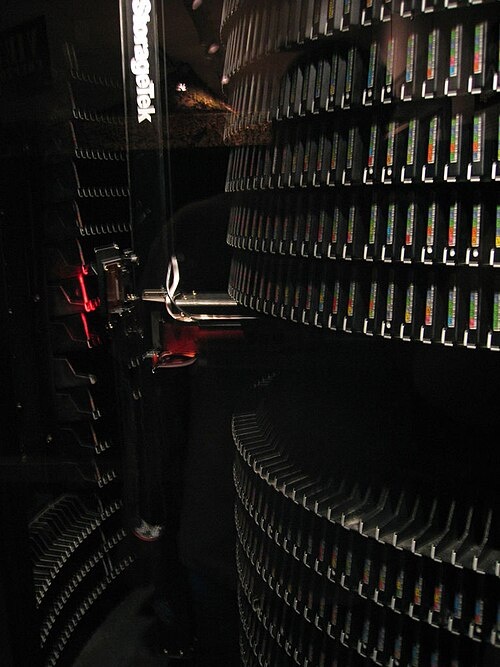
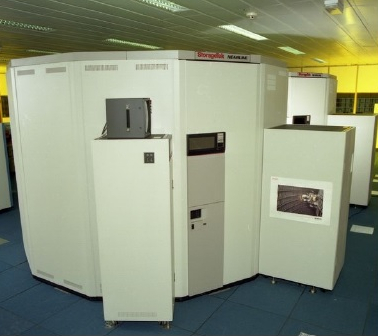
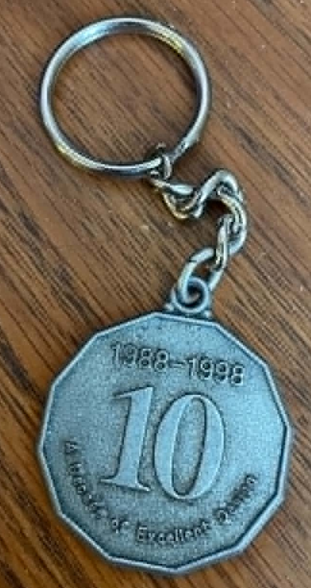
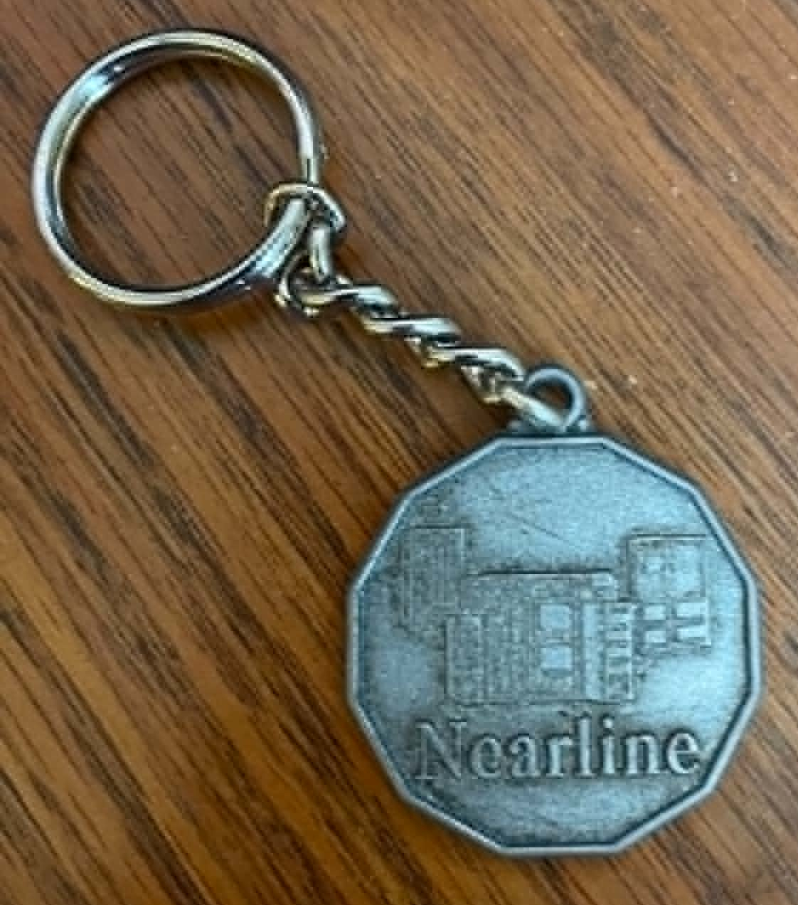

A visual collection of obsolete and rare data storage media formats.
In the old days, every job in the data center relied on "tape in, tape out." Temporary disk storage was just starting to be used to string individual job steps together, but the ultimate input and output was always tape. Before the era of automation, mainframe data centers relied heavily on human operators to scramble around continuously mounting and dismounting tapes. John knew this pain firsthand—when he was originally hired at DLE as an operator trainee, being a "tape monkey" was exactly one of his tasks! By the late 1980s, the need to break this human bottleneck was critical. StorageTek began working on automated solutions, though the very earliest "prototype library" was simply a plywood mockup that CEO Jessie had actually forbidden them to build.

The Paranoia of Prying Eyes
Bringing the first Automated Cartridge System (ACS) to life required intense testing in a highly secretive atmosphere. IBM Customer Engineers (IBM SEs) were always lurking around the facility, so paranoia was naturally high. Prior to building a massive ten-foot-high chain-link fence around Product Evaluation (PE) and Corporate Product Acceptance Testing (CPAT), the very first library that CPAT tested was entirely covered in BLACK PLASTIC just to prevent those prying eyes from seeing it.
The Dodecahedron and the Broom Handle
When the ACS 4400 (affectionately known as "The Silo") was finally realized, it was a mechanical marvel. It was a massive dodecahedron (12-sided) robotic cell. Inside, a central robotic arm could retrieve any one of thousands of tape cartridges and mount it in seconds.

The vision system guiding the robot relied on infrared cameras—a decision made after early testing and Field Engineer (FE) reports revealed that the first version of the cameras, which used visual light, were too prone to getting false signals.

Testing the hardware and software was divided. CPAT handled the complex Host Software Component (HSC)—the software that tricked the mainframe into thinking a human was mounting the tapes—while John in PE focused mainly on the hardware. As the product evolved beyond the initial library under the black plastic, StorageTek engineers realized they needed to expand the system's capacity. They designed a Pass-Thru Port (PTP) to connect multiple silos together. If all the available tape drives in one silo were busy, the PTP allowed a tape to be passed to an adjacent silo that had a free drive. This ingenious redesign eventually allowed connecting up to 16 libraries together (holding 96,000 tapes), and later expanded to a staggering 24 silos housing up to 144,000 tapes! It was during the testing of these connected twin libraries in CPAT that John discovered a critical physical flaw. A broom handle fell between the libraries and completely jammed the transfer of tapes through the PTP! This simple discovery resulted in the engineering team designing a special protective cover for the port.
The Software Battle: Host Software Component (HSC)
The hardware, however, was only half the battle. IBM, seeing its manual tape drive dominance threatened, aggressively pushed back. They didn't just attempt to sabotage StorageTek's efforts in MVS (which was the primary operating system at the time). STC engineers also had to contend with straight OS and VM. IBM tried to alter proprietary operating system parameters and allocation algorithms across these systems to make it difficult for third-party automated hardware to intercept tape mount requests. The software engineers at STC had to constantly reverse-engineer and patch HSC to ensure it could seamlessly hook into these various IBM operating systems.

The success of HSC allowed the ACS 4400 to dominate the market, establishing StorageTek as the undisputed king of automated enterprise archiving and paving the way for the legendary Nearline and PowderHorn systems of the 1990s.

